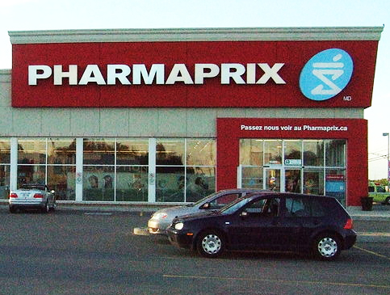

Eu precisava ir no Correio enviar o pagamento do aluguel.
Sim, acredite! Muitas pessoas pagam o aluguel enviando um
cheque pelo correio. Como fiquei um pouco com medo disso,
apesar de todo mundo me falar que é super seguro, consegui
a conta corrente do dono do apartamento para fazer um
depósito no mês que vem.
Voltando ao assunto rs. Eu precisava ir no correio e não
sabia onde ficava o Canada Post mais perto da minha casa.
Perguntei para várias pessoas e todos me falaram: Vai na
farmácia. Farmácia?! Pensei que meu francês e inglês
tinham ido por água abaixo. Até que eu resolvi conferir
pra ver.
Fui até a Pharmaprix e meio envergonhada perguntei: É aqui
que posso enviar carta? A moça sorriu e disse: Sim, no
fundo da farmácia no segundo andar.
Nossa! Meu inglês e francês estavam salvos! rs E fui
enviar a carta. Como estava com medo de enviar a carta com
um cheque dentro, perguntei quanto seria para receber uma
confirmação de recebimento. Nove doláres. Isso mesmo!
NOVE! Eu desisti e resolvi arriscar. Deu certo! rs
A farmácia aqui é enorme. Na maioria das vezes são dois
andares. Embaixo ficam produtos de maquiagem, váaaaaaarias
marcas e também shampoos, condicionadores, leite, batata
frita, revista rsrs. E em cima ficam produtos que só são
vendidos com receita médica e remédios que você pode
comprar sem receita como: Tylenol, Vick, Vitaminas, etc.
E no fundo, o correio, é claro!
Dica: Alguns produtos como sabonete, hidratante, vale mais
a pena comprar na Pharmaprix do que no Metro. Às vezes
leite, suco também saem mais em conta. Quando você compra
produtos de beleza, você pode ganhar várias amostras de
outros produtos. Além disso, você pode fazer sua
carteirinha fidelidade na Pharmaprix de graça e ganhar
pontos e descontos, e não precisa pagar pela sacola
plástica que em alguns mercados custa 0.9 centavos.